Robot Framework Training - RFW 3.1
Robot Framework, or RFW, is a free set of libraries that can be used to
enable automatic testing. RFW is flexible and can easily incorporate any
tool or library through the Python language. Dahlgren has developed a
set of external files that assist in and enhance the experience using RFW.
This document is intended to be used as part of a hands on training
session and may be self-led. For the complete novice it is suggested
that you complete the instructions in order moving from configurtion,
to your first test, etc. until you have used all the RFW 3.1 features.
Experts may use the table of contents below to jump directly to any section.
Earlier versions are available:
Table of Contents
Pre-Installation
Operating System
RFW works on Windows and Linux. RHEL 8+ is preferred OS, and these instructions
are primarily written for RHEL 8, because that OS tesseract and other libraries
required for RFW. It is considered best practice, especially in a non-networked
lab, to use an attached repository with the full OS build during the configuration
process. There are dependencies, not shown here, that are simply too numerous to
handle otherwise.
Installing RHEL Packages
Each of the RHEL packages must be installed by the root (or SUDO)
role using the command yum install package-name.
After installing the packages, find the command for python 3 in your system using
which python3 or you can search the /user/bin/ folder. Sometimes the
system assigns names like python3.X depending on the selected version.
NOTE: If you are using a different operating system, you will need
to locate the equivalent libraries or downloads.
Pip Install Python Packages
If you are attached to the web you can automatically download and install
python libraries using python3 -m pip install package.
When offline, you can specify the exact path of the compressed file. If you
were installing offline, use python3 -m pip install PATH
Setting Environmental Variables
Environmental variables are used to fix certain paths in memory and avoid frequent use
of very long memory locations. You will need to (re)define several environmental variables
at some point during configuration. Within these variables, individual values are separated
by ':' in linux and ';' in windows. It will look something like this. The final '.' represents
the present working directory.
something/place/thing:something/otherplace:.
Install Robot Framework
Description
Robot Framework is a free library that natively supports testing. A typical RFW test
includes cases and pass/fail terminology with a variety of built-in features that are
easily used to implement automatic system tests. Natively, RFW doesn't support a great
deal of additional capabilities, but it does allow for easy integration of tools as
will be demonstrated.
Dependencies
- RHEL Libraries
-
- Python3X
- Python3X-libs
- Python3X-pip
NOTE: You must select the same version of python 3
for ALL of the red libraries above. On RHEL 8, the peferred version appears
to be Python 3.9.
- Python Libraries
-
- robotframework [link]
NOTE: there is another Python library 'robot'. Do NOT confuse the two.
Instructions
- Install all RHEL dependencies.
- Open the cmd prompt.
- *VALIDATION* Check the python environment.
python -V -- This is a CAPITAL vPython 3.11.7 -- actual results may differ-
- Use
pip install robotframework
- *VALIDATION* Check the RFW environment.
python -m robot- We want your system to include the path to robot.exe from the command line. It SHOULD return something like this
[ ERROR ] Expected at least 1 argument, got 0.
Try --help for usage information.
If the path has not been set, you may get a different error.
-
- *ALTERNATIVE* Locate the RFW executable. The exact location depends on the OS, but it should be with your python installation. Likely paths look something like these examples:
path to python/scripts/robot.exec:\Users\user_name\AppData\Local\Packages\Python.3.XYZ\scripts\robot.exe
- *ALTERNATIVE* Add the python scripts folder to the PATH environmental variable.
- *ALTERNATIVE* Repeat the test of RFW from the command line.
- Python and RFW are correctly installed.
Project 1. Simplest Robot Framework Test
The first test case is meant to demonstrate the basics structure of a RF script
and the use of online documentation. The objectives for this lesson
are very simple. Learners will create a minimal viable product (MVP), a term for
the least amount of infrastructure and code to achieve the goal. In this case,
the MVP is a working RFW test which purposely fails and passes in two distinct
test cases. The learner launches the test and verifies that the correct behavior.
Instructions
-
Create a new folder under
deployment/RFTest/examples. Open a
simple text editor and save a new file as rfw1.robot in that folder.
Add the following required elements to the RFW script.
*** Settings ***
*** Variables ***
*** Test Cases ***
*** Keywords ***
- Settings is where other libraries and extensions can be added to your test.
Later we will use this section to bring in reusable test components. In this case
we will import one of the standard RFW libraries. Add this line after settings.
*** Settings ***
Library String
WARNING RFW syntax requires a minimum of 3 spaces between
"keywords" and "parameters". We will get a handle on the vocabulary later, but in
the previous line "Library" is a keyword and "String" is the parameter. If you only
put one space (e.g. "Library String") that is not the same thing and you will have
an error in your test script.
- Variables is a place to declare any data values you want to track during the test.
RFW allows you to define variables within a keyword, for a test, or for a whole suite
of tests. In this case we will use a variable to enter a medium length word. You might
pick your favorite US state. Also save a numeric value.
*** Variables ***
${state} Virginia
${num} ${3}
In this case ${state} is the name of the variable. You can think of it as
a box to hold data. Here '$' indicates this variable contains a single variable. There
is a useful reference
demonstrating all the variable types and syntax.
In most computer languages all numbers are counted from zero and RFW is no exception
In this test we will try to find the 3rd character in the state name. Note that because
we start counting at zero, the 0th character is 'V'. Following this logic, the 3rd
character is 'g'. RFW does recognize different data types but most data is considered
to be text by default. Thus the word Virginia is text without any fancy wrapper.
This will be useful later. Unfortunately, the simple numeric value 3 must be wrapped
${3} to force it NOT to be text.
- Test cases are the actual test script and we will spend more time on that section
shortly. For now, let's create two simple test cases that just demonstrate the pass and
fail capabilities of RFW.
*** Test Cases ***
First Case
Cause Failure
Second Case
Cause Pass
The anatomy of a test case is simple. Each test case gets a name which will appear in
the pass/fail report. After than RFW uses white space (i.e. the same 3 required spaces)
to indent the contents of the test case. The aptly named First Case contains
Cause Failure because it is indented. In the Second Case whatever
Cause Pass must execute to completion to pass that case.
- Keywords are the basic unit of a RFW script. In later lessons you will learn how to
create your own library of keywords for reuse in larger and more complex test scripts.
For now we will create the
Cause Failure and Cause Pass keywords
which was suggested in our test cases.
*** Keywords ***
Cause Failure
Fail Hello World
Cause Pass
Log I did nothing but I did pass!
You should recognize that the anatomy of a keyword is very similar to a test case.
Cause Failure is the name of the keyword and the contents of the keyword
are indented. In this keyword, Fail and Log are other keywords
that come from the RFW BuiltIn
library. That library is NOT found in settings and can be assumed in all your tests.
Let's explore the two libraries that we are using in this test. Here the BuiltIn
keywords can be reviewed and we can find the Fail keyword in particular.
The Robot Framework Foundation
owns RFW and maintains its extensive documentation and libraries. Among their offerings
are far more complete training resources. Perhaps for further reading. Our purpose in
visiting these libraries is to demonstrate the means at your disposal to find out more
about what keywords are out there and how they are used. Take a few minutes to look at
this example.
-
You have created a test! Now we are going to run it and show the features of RFW.
Open a terminal and navigate to the RFTest folder. Usually, you will run all your
RFW tests from this location. The command is
robot ./example/yourfolder/rfw1.robot.
The run should produce something like this.
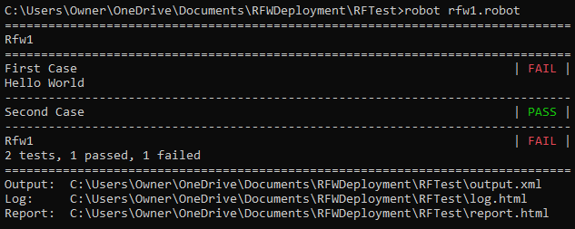
It is traditional that any new programmer should start with Hello World, but it is
unusual to achieve that goal by failing a test. Note here that the each test appears
on its own line marked as FAIL and PASS.
Overall, the group of tests, known as a "suite", also failed. The final report shows
that 2 tests ran, 1 passed, and 1 failed. These are the sorts of metrics that RFW
natively creates as part of the framework and without any effort on your
part.
-
The default log is another useful product automatically generated by RFW. It will appear
as
deployment/RFTest/log.html. and shows the test steps as a hierarchy. In
this way the test Rfw1 contains both First Case and Second Case
but each case also contains greater detail. When first opened, the log will automatically
expand all failures for inspection, so the keyword Cause Failure is open
all the way to the Fail keyword and the message "Hello World". The passing
case is not open by default, but you can expand it to see the message we logged. In this
hierarchical view you may catch your first glimpse of the structure of RFW. The redundant
red markers lead the tester to the point of failure and may be contrasted with the green
markers that are collapsed by default--after all, nothing broke there.
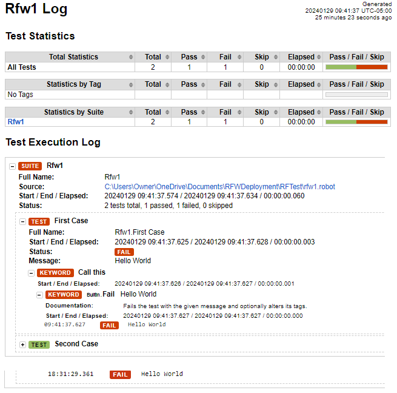
Solution Scripts
RFW script
Project 2. Using Keywords in a Test
In the previous test we created two test cases and two keywords without
making much distinction. In this test we will flesh out the concept of
a keyword and the distinction between a test case and a keyword. The
learner will create a test with multiple cases and a reusable keyword.
Instructions
-
Start by downloading and opening the solution from the previous lesson. Clear the
test case and keyword sections. Resave it as rfw2.robot in the same folder.
-
We will begin by building one concrete test case. Later we will expand the use of
test cases based on this example. Write the test case below and rerun the test as
before.
*** Test Cases ***
Read Character
Log ${state} is my state
This time there is only one test case and it shows a green pass. This is the default
position on all tests. Unless something happens to halt execution (a bug or complete
crash), your test will pass. In the previous lesson, we intentionally Failed
one test which is sometimes an important outcome. Open the default log and fully
expand to read the final output Virginia is my state.
-
Let's expand the test to search for the 3rd character as previously discussed. Here
we will use the Split String To Characters
keyword from the String
library to get a list of characters from
${state}${num} as the index of one specific character. The square bracket syntax
[ ] indicates that we only want the list value at that index. Run the text,
read the log, and verify it found 'g'.
*** Test Cases ***
Read Character
@{characters} = Split String To Characters ${state}
Log The character is ${characters}[${num}]
*FOR DEVELOPERS* Although RFW is based on Python, the syntax
is nothing like the base language. In this example we can see text and variables aggregated
without concatenation. When the line is interpreted it goes through several substitutions.
The final line is simply interpreted as text which is the default for all RFW code. This is
sometimes tricky because you cannot pass numbers or any object value. EVERYTHING is
reinterpreted as text
The character is ${characters}[${num}]
The character is ['V','i','r','g','i','n','i','a'][3]
The character is 'g'
The character is g
-
Now we have a test case that verifies one aspect of the state and does nothing more.
It is a one-trick pony. To accomplish more with a test, we want to move the functionality
from the test case into a new keyword. This is called refactoring and more
specifically Extract Function.
The goal of refactoring is to maintain the same function while changing the form of
the script and in the process make it easier to work with. Because we want to verify
the same functionality we will build a second test case and then gradually add features.
For right now copy and paste the existing test case. Rename the new case however you
like. After each small step you can instantly rerun the test to verify that the
function remains the same.
*** Test Cases ***
Read Character
Log ${state} is my state
@{characters} = Split String To Characters ${state}
Log The character is ${characters}[${num}]
Read Character 2
Log ${state} is my state
@{characters} = Split String To Characters ${state}
Log The character is ${characters}[${num}]
Once you rerun the test you will see that there are now TWO test cases and both
pass. In the log too there are TWO test cases. A quick check shows that BOTH cases
have the same behavior and results.
-
Next we will create a keyword to
Find Nth Character. It won't do
anything yet, but we'll have the right format. In this structure we can see
two characteristics of a Keyword that are NOT part of test cases: parameters
and return statements. As previously discussed, parameters are separated from
a keyword by the requisite 3 spaces. A parameter
is used to 'pass' information to the keyword so it can do its job. RFW uses
the synonymous term 'argument' in its syntax. This keyword has two arguments/parameters
(${text} and ${n}). Note that the [ARGUMENTS]
always appears on the line imeadiately following the keyword name and that each
argument/parameter is separated by the usual spaces.
*** Keywords ***
Find Nth Character
[ARGUMENTS] ${text} ${n}
@{characters} = Split String To Characters ${text}
[RETURN] ${characters}[${n}]
The return statement is the means of giving a value back from a keyword. In
this example we are going to find the Nth character and then we have to give
it back. The Nth character is returned from the keyword. That value could be returned
to a test or another keyword--whatever called Find Nth Character.
That kind of flexibility means that this keyword can be used and reused in
different settings.
Few keywords are of much value without parameters and return statements. Maybe
the keyword is smart enough to find the data it needs elsewhere (e.g. reading
something off the screen). Maybe it can take some action that is more important
than returning a value (e.g. push a button). Whatever the case, flexible and
reusable keywords are easiest to make when you have parameters that allow input
to vary and a return statement that shares the result with the calling script.
NOTE the changes in this step will have NO effect
because the new keyword isn't called from anywhere in the test cases. We have
extracted the functionality, but not used it.
-
We will complete the refactoring by changing the second test case to use the new keyword.
Because we have already extracted the functionality into the keyword, we only
have to figure out how to work with that keyword. In this case we pass the state
and the number to the keyword as parameters. Parameters have to be in the same
order, but the names of the parameters in the keyword (i.e.
${text}
and ${n}) don't have to match the name we use in the test case (i.e. ${state}
and ${num}). Whatever value is returned will be stored in a temporary
variable ${a}. Afterward, we log that text. Run the test again and see
that all of our changes have not broken the function. In the mean time, we have
made a new, reusable keyword that will help with our future testing. That's refactoring.
Read Character 2
Log ${state} is my state
${a} = Find Nth Character ${state} ${num}
Log ${a}
-
Now that we have a reusable keyword, it's much easier to create a series of
test cases that use a set of parameters. Let's create a brand new test case that
really tests something. We will use the Should Be Equal
keyword, again from the BuiltIn library. That keyword will check whether we got
the value we expected and then give us a pass/fail result. You can copy these test
cases and build more based on different parameters. Try to make 10 or more. Test
them and see the various pass/fail answers per case.
*** Test Cases ***
Read Character 1
${a} = Find Nth Character ${state} ${num}
Log ${a}
Should Be Equal ${a} g
Read Character 2
${a} = Find Nth Character ${state} 2
Log ${a}
Should Be Equal ${a} g
Read Character 3
${a} = Find Nth Character ${state} ${num}
Log ${a}
Should Be Equal ${a} i
Read Character 4
${a} = Find Nth Character ${state} 2
Log ${a}
Should Be Equal ${a} r

Solution Scripts
RFW script
Project 3. Data-Driven Testing
Starting with this lesson the instructions will focus less on line-by-line
code instructions and more on guidance. Training wheels are off, but we aren't
letting go just yet. This lesson also introduces Data-Driven Testing or DDT
which is a testing paradigm where one test script is enabled by multiple
test cases in the form of parameters. The learner will convert the
very duplicative last lesson into a DDT paradigm which makes more sense.
Instructions
-
Start by downloading and opening the solution from the previous lesson.
Resave it as rfw3.robot in the same folder.
-
If you look at the last lesson you will see that the test cases are
very repetitive. This is not at all unusual. A lot of tests suffer
from a need to test variations on a theme. Start by creating a new
keyword that would do the same job with parameters. Create parameters
for the text, the number, and the expected value.
-
For DDT, we need to identify one keyword (the one we just created)
which will act as the
Test Template. In other words,
the test script is now entirely made up of keywords and we will
activate that Test Template with different parameters for each test
case. We identify the Test Template in the settings.
*** Settings ***
Library String
Test Template Read Character
For DDT, RFW requires the Test Template, but there are four
other specialized keywords that can be defined for a single DDT test. These
are not required, but may be a good idea. As shown in this image, the
designated keywords are executed in a fixed order. While only five keywords
are used in DDT, your test is not limited. Remember that a keyword can call
another keyword. With these five keywords we are defining five "jumping off"
points which can contain as much or as little as we want and which can call
other keywords if desired.

Suite Setup is called
before everything else in order to configure the system for test. This
process brings up everything in a default state and may pull up auxiliary
elements (e.g. the Java-Sikuli server). At the very end of the test is
Suite Teardown which performs a complementary service,
closing things down, shutting off auxiliary services, and posting final
data. At the individual test case level there are similar setup and teardown
keywords. These are more likely used to configure the parameters for a
specific test (e.g. "Is the light switch currently ON before we start")
and restoration to the safe, default state after a test. The Test Teardown
is especially important if the next test will depend on starting in a
safe space. Are all my services still up? Did I remember to turn off the
lights? In this test we will only use the Test Template but
we will see the others soon.
-
Now it's time to address the test cases themselves. In a DDT configuration
RFW still has test cases, but it represents each case as just one line of
parameters. Based on the test cases demonstrated in the last lesson, these
are the four test cases one might use. Note that each line has a case name
which can be quite informative. After that each paramter can be either a
value or one of the variables. In this case a new fourth parameter indicating
whether the values are expected to match. It's counter intuitive, but
if the test doesn't find a match and I didn't expect to
get a match, that's still a pass. We are testing a FAIL case and it FAILed.
That is what we wanted to see. Use your own test cases from lesson 2 to create
more test cases following this pattern.
*** Test Cases *** String Index Char Match
Find g ${state} 3 g True
No find g ${state} 2 g False
No find r ${state} 3 r False
Find r ${state} 2 r True
You may have noticed that on the Test Cases line there are names for the
parameters and that the parameters of each test case are aligned vertically
under those names with a combination of tabs and spaces (always at least one
tab or 3 spaces). The names and spaces have no effect on RFW but it is
considered a best practice for increased readability because the alignment
allows direct comparison between test cases. Bugs in the parameter set
are easier to find and it's easier to remember what 'g' or 'r' means in
reference to the label.
-
Let's add that fourth parameter to our Test Template keyword and decide how
to handle it. In this case we want to either use
Should Be Equal
or the similarly obvious Should Not Be Equal. And we want our new
parameter to tell us which to use. The natural way to handle this is to
Run Keyword If
there is a match or not a match. Because Run Keyword If has a built
in ELSE feature, we can include both actions on the same line.
This is our first example using a logical If-Else and these are standard
fare in a RFW test. Work on your own to build a simple If-Else using the
Should and Should Not checks. Remember that you can run your test multiple
times each time you think you have reached an incremental stopping poins.
-
There is nothing holding us to the state and number we chose. We are free
to create entirely new cases. You can add more variables to create standard
components or you may enter any text you want in any individual test case.
Experiment and rerun your tests periodically. Be sure to look at the default
log to verify the test results match your expectations.
Solution Scripts
RFW script
Configure RFW GUI Helper
Description
RFW can work with GUI, but it still needs to know where the GUI elements are
located. In order to avoid many weeks of GUI-buidling, RFW 3.1 provides a No-code
tool to identify all widgets visually. We will need to install some additional
libraries and then we can operate the tool.
Dependencies
- RHEL Libraries
-
- Python3X-setuptools
- Python3X-tkinter
NOTE: You must select the same version of python 3
for ALL of the red libraries above and in earlier sections. On RHEL 8, the
peferred version appears to be Python 3.9.
- Python Libraries
-
NOTE: Select a version of pillow compatible with the
python version selected above. See this table
for details.
- Other
-
Instructions
- Install all RHEL and Python dependencies.
- Download and unzip the RFW 3.1 deployment folder in a convenient location.
- Open the cmd prompt and navigate to
deployment/RFGUIHelper/validation.
- 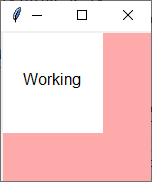*VALIDATION* Run the testgui application
python testgui.py- If this window appears, the python environment is valid
-
- Navigate to
deployment/RFGUIHelper.
- *VALIDATION* Run the RFGUIHelper application. Repeat whenever you run to edit a test window.
python RFGUIHelp.py- The main window should open. Close the window.
-
- RFGUIHelper, tkinter, and pillow are correctly installed.
Project 4. Mapping a GUI
In this session we will use a common GUI-based application as the basis
for a planned test. We will not be writing any actual test scripts, nor
using this mapp, but it is useful to see how the elements are identified
and how they work together to make a test possible. The learner will be
able to create a new GUI project and define all the GUI elements.
Instructions
-
We are going to create a GUI-map for our GUI-mapping too. It's very meta. To
map a GUI, first take several screenshots of the GUI in question, all tabs,
buttons, pull downs, etc. This step ensures that there is material for the tool
to use while mapping the GUI.
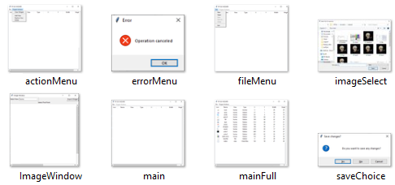
-
Start the GUI helper from
/deployment/RFGUIHelper/
using python RFGUIHelp.py. Select File > New and navigate to or
create a folder for your new project. Once you select a project name a new
JSON file will be created for that purpose. More than one project can be
saved in the same location, but your file organization is ultimately up to you.
After opening the project, you must pick your first view. Navigate to one of
the screen captures you just made and select it. Select a name for that view.
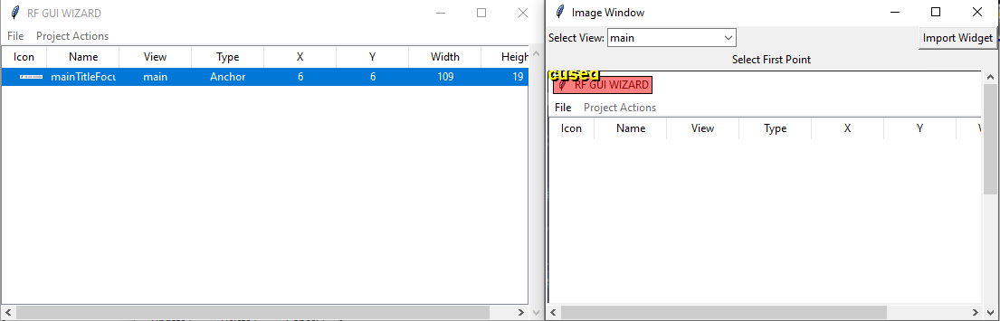
You will see two windows. The main window contains a table of all widgets for
this project. The picture window show each view and any widgets identified in
that view. In this case, you can see that we are mapping the MicroSoft Paint
application.
-
To create a widget, click on the screen in two places. These points should be the
upper left and lower right corners of the widget's space. If you get this wrong
the application will remind you of the rule. Once you have selected a space on the
image for the widget, a new window will pop up where you can edit the widget.
By changing the x/y location or the width/height dimensions you can adjust the
location and refine your selection. Each widget type also has distinct members
that help to define it's function in the test.
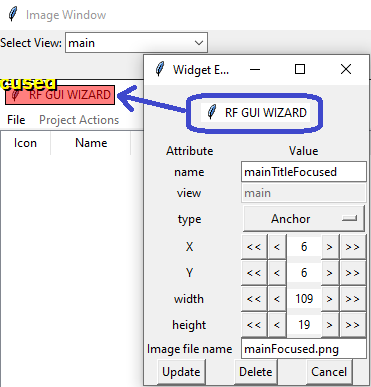
This widget is an ANCHOR. Anchors are fixed images (maybe more than
one) that are always visible on the GUI and may be used to orient the test to the
window. Everything else on the window will be in an x/y position relative to the
anchor.
When a window is moved from one point to another, RFW needs some firm location to
effect that action. Thus a MOVEPOINT can be defined. These are not
required, as with an achor, but they are useful. Because widgets can be overlapped,
an anchor can also serve as a movepoint.
-
BUTTONS are the most common widget. Many things are a button in one aspect or another.
Here all the buttons on the GUI have been mapped out and they populate the table on
the main window. You can see the red overlay representing each widget and the name
more-or-less aligned with each overlay. These are placeholders to help in visually
checking the layout of the widgets. To edit the placement, click on the widget in
the table and the same editing window will appear.
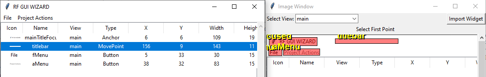
-
On the main window there is a view menu where views may be added/modified. For each
view, you will need to select a screen capture and a unique name. After you have
added some views, you can select the active view from the drop down in the image
window. In this case, we have added a second view showing the open File menu (red).
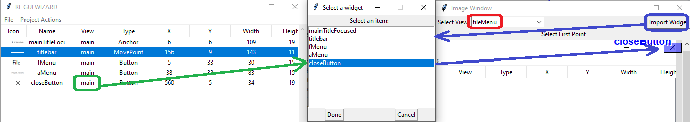
All widgets are "native" to one view. As you have seen they are red overlays. If you click
on the import button (blue), you can select one or more widgets from other views to be
shown relative to a non-native view. In this case, the close button from main view (green)
is imported as a foreign widget on the fileMenu view. Foreign widgets are blue overlays.
-
Certain widgets like buttons and
TABS can link to another view. This
correlates to an abrupt change in the GUI when a tab is pressed or to a popup when
a button is pressed. Links are optional. In the test, if a button with a link is
pressed, the test will internally shift to that view and those widgets. You don't
have to manage this process explicity, it is implied in the click action. In the
main view there is a close button (blue) that opens up the save menu. In the widget
editor, the link property (green) is used to select the view related to that button.
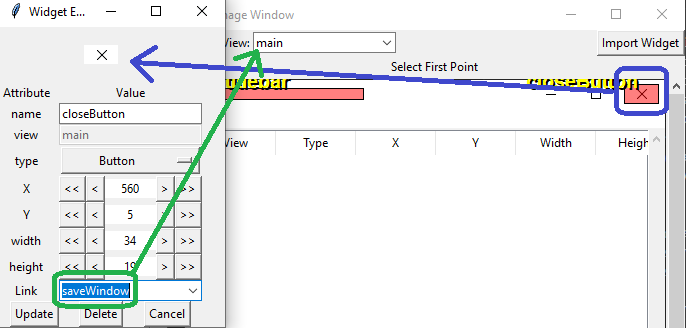
-
After completing the mapping, we can refer to the JSON file you named in step 2.
Collocated with that JSON file are images saved for the project. If you inspect
you inspect the file, you may see the list of views and widgets. All data paths
refer directly to the location of the JSON, so the whole project can be extracted
in a single folder.
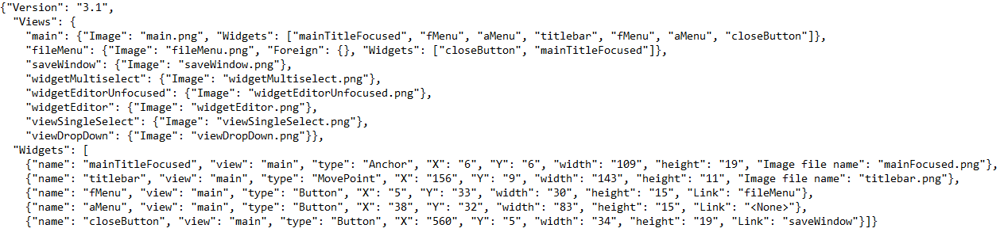
Solution Scripts
Project JSON
Objective Quality Evidence Library
Description
The auxlliary libraries of RFW 3.1 include a report system that exceeds the capabilities
of the default libraries. This report is built to support a standard format without
the tree structure. That is not to say that the built in log is in any way insufficient,
but perhaps difficult to read for the uninitiated. The goal of the auxilliary library
makes it easier for a beginner to go from zero to test in as short a time as possible.
The OQE libary—referring to objective quality evidence or data-based proof of correct
function—puts all the test data and a live report in a single location.
NOTE: You will need to start the SikuliServer before running any
Sikuli test. Run deployment/RFTest/SikuliEntry/javaserver.bat. You may consider
making this an automatic process during Suite Startup.
Dependencies
- RHEL libraries
-
- java-XXXX-openjdk-devel
- tesseract-devel Windows Install
- leptonica-devel Not required as a separate download for Windows
- Python Libraries
-
- Other
-
Instructions
- Install all RHEL and Python dependencies.
-
The OQE library first requires a target folder where the data will be saved. Create
a folder and record the empirical path as in
C:\Users\Owner\OneDrive\Documents\RFData3_1
-
Navigate to and open
/deployment/RFDemoGUI/demoGUI.html in a browser.
the blank report will look something like this. At present it does not point to a
valid data path.
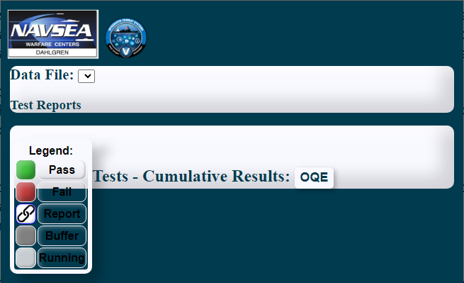
-
Reopen the
demoGUI.html as a text document. On line 15 you need to
replace the default data paths with the new folder space. Note that the exact
syntax of a file path may be dependent on the specific operating system.
- Original line
-
<body onload="initialize('./../../../../RFData/test.js',
'./../../../../RFData/archive.js')"
class="background" id="body">
- Example of new line
-
<body onload="initialize('C:\Users\Owner\OneDrive\Documents\RFData3_1\test.js',
'C:\Users\Owner\OneDrive\Documents\RFData3_1\archive.js')"
class="background" id="body">
-
Navigate to and edit
/deployment/RFTest/OQE/textreader.py. Around line 11 you must find and replace the tesseract executable path.
tesseract_path = r"C:\Program Files\Tesseract-OCR\tesseract.exe"
NOTE: The 'r' preceeding the string makes it literal so that the '\' characters are as-is.
- Locate the Py4J JAR. This JAR is downloaded during the installation of Py4J. According to the documention, the exact install location depends on the OS. Likely paths look something like these examples:
path to python/shared packages/py4j/py4j0.x.jar- /usr/share/py4j/py4j0.x.jar
- /usr/local/share/py4j/py4j0.x.jar
- c:\python27\share\py4j\py4j0.x.jar
- c:\Users\user_name\AppData\Local\Packages\Python.3.XYZ\LocalCache\local-packages\share\py4j\py4j0.x.jar
- Locate the Sikuli JAR which is probably in the downloads folder.
- Move both JAR files to
deployment/SikuliEntry
- You will need to (re)define the CLASSPATH environmental variable to point to the
JAR files. These values are separated by ':' in linux and ';' in windows. The final
'.' points to Java classes in the the present working directory. The new CLASSPATH
will be something like
something/deployment/SikuliEntry/py4j.jar:something/deployment/SikuliEntry/sikulix.jar:.
You always have the option to use the inline classpath ex. javac -cp /that/path:/again/right/:. someprogram.java
-
Repeat the process for the PYTHONPATH variable. Create it if it does not already
exist on your system. Add the these paths:
/deployment/RFTest/OQE:/deployment/RFTest/widgets:.
- Open a new cmd prompt and navigate to
deployment/SikuliEntry.
- *VALIDATION* Execute the following commands to verify that the JDK is working. If not, you may need to locate the installation and add it to the PATH environmental variable.
java -verisonopenjdk version "20.0.1" 2023-04-18 -- actual results may differ-
javac -version- You should get a similar statement about the version of javac.
-
- *VALIDATION* Compile the SikuliEntryPoint on your system.
javac SikuliEntryPoint.java- You should get a blank line but no errors. If you get any errors, you may be missing a dependency library.
-
- *VALIDATION* Run the SikuliEntryPoint application. Repeat whenever you run a RFW test.
java SikuliEntryPoint.class- You should get
Gateway Server Started when the server runs. Use CTRL+C to force a shutdown.-
-
Navigate to and edit
/deployment/RFTest/oqeTest.robot. Under **** Variables **** you will find
${DATA PATH}. Make this path the same as that you selected for the HTML report.
-
*VALIDATION* Run the the OQE validation test. Refresh the demoGUI
report in the browser and click on the link icon to open and verify the results shown here.
robot oqeTest.html
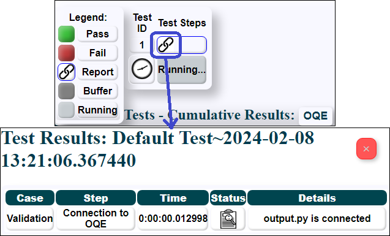
- Java, Python, and Sikuli are correctly installed.
Project 5. Testing with a GUI
In this session, we will investigate testing with a GUI and how sikuli and RFW interact
during a test. We will conduct the test against our own RFGUIHelper. You may repeat these
steps or use any target application on your computer.
Instructions
- Navigate to
./deployment/SikuliEntry and start the server.
Gateway Server Started
-
Begin by adding two lines under settings.
- DataExtraction.resource
-
This library enables both Sikuli and reporting capabilities for RFW 3.1.
- genericwindow.py
-
Generic window is a no-code solution that pairs with the GUI-mapping
configuration file.
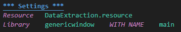
-
We will use one variable to locate the data folder previously created in configuration.
This line will be a staple of all future test cases.
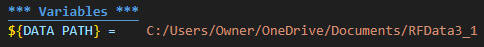
-
We will simulate the DDT-style test in this one example because we are only demonstrating
the GUI operations
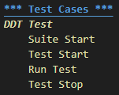
-
In the Suite Start we have to take several standard actions that define a RFW 3.1 test
Configure Image Library- This step should ALWAYS come first. It specifies that we are using Sikuli for the test and gives the path for reported data. The test WILL fail if this step isn't done first.
Set Log Level- This is part of the Built In library, but should always feature in order to record sufficient debug data in the log.
Archive Any Previous Data- In RFW 3.1 the current test will overwrite any existing test data. If you want to save that test data, it should be archived. Always run this before starting a new test suite.
New Test Event- In RFW 3.1 the HTML report shows individual lines for each test event. To create a valid report, you must call this keyword at least ONCE. If there are multiple tests in a suite each one should be proceeded by this keyword.
Record Action- This is a standard OQE method that places a yellow action banner across the report. It is a great mechanism to ensure actions are called out specifically in the report.
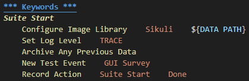
-
Starting the test should ensure that elements of the system under test are in place. Here
we take several actions to prepare the test suite. Again, several of these are standard
fare for RFW 3.1
Banner- As with Record Action, this places a banner across the test report and one which is best used to call out new sections of the test.
Start Process- This is part of the Built In library and can be used to kick of the application under test. Other methods may be used, but this is one option.
Configure- Each Generic Window must be configured from a JSON file created in the RFGUIHelper. Again, we indicate that this is a Sikuli application and pass the data path
Find- Each Generic Window can be found by searching for the Anchors. One anchor on one view should be visible and that view becomes active. Here we use a Built In keyword to attempt the Find multiple times in case the application loads slowly. This is standard for Robot Framework. We have 2 repetitions 3 seconds apart.
Log/Log To Console- Both of these actions are part of the Built In library. Log adds data to the log.html report. Log To Console puts a line on the command line as feedback during test.
Teardown- Teardown is part of the Built In library and as the name suggests it is ALWAYS executed when the keyword terminates. It is a great way to catch and report any errors or take final actions.
Keyword Final- Often used as a teardown step, this is a standard part of RFW 3.1. It closes the keyword with a Pass/Fail block and puts a black separation bar across the report. TEST NAME, KEYWORD STATUS, and KEYWORD MESSAGE are part of the Built In library.
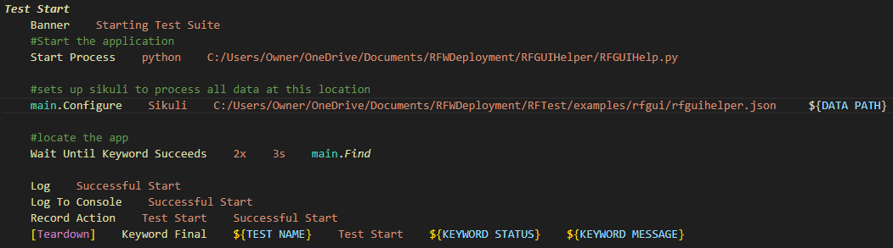
-
The actual test is rather simple, demonstrating two useful features of RFW 3.1.
Document API- This keyword gathers information about the window as a single string. It must be logged or displayed in some other way, but it is a useful way to recall what features each widget, view, and window can support.
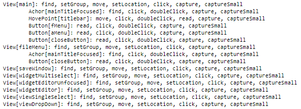
Debug Window
Similarly, this keyword identifies all the widgets on the current view with a short-lived red overlay. This feature is useful to show where the widgets are AND to ensure they are properly located on the screen.
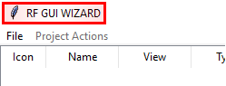
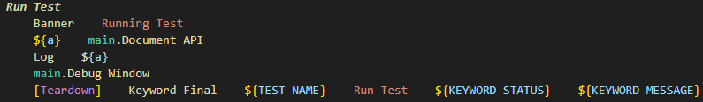
-
In this example we have no analog to a suite stop, but we do have a test stop. This is also
the first action taken against a GUI member.
Click is exactly what it says: it
executes a mouse event on the named widget. Naturally, the test assumes that widget is on
the current view. If that is not true the test will fail.
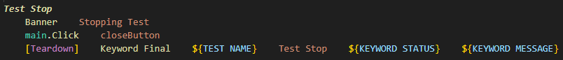
-
The GUI report shows three blocks for the test. These three blocks correspond to the three
green banners across the detailed report.
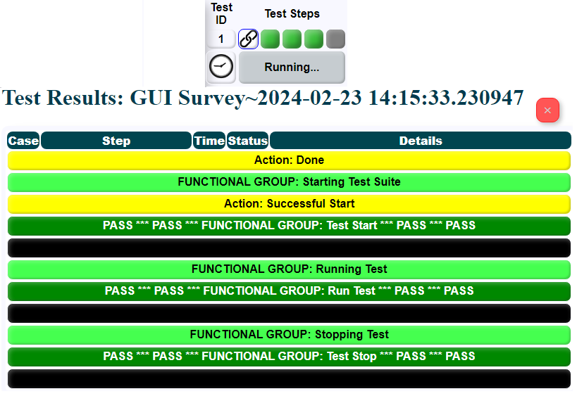
Solution Scripts
RFW script
Project 6. Resource Files
This session will focus on resource files. Up to now we have used
.robot files, but now we will learn how and when to
create a .resource file. Recall that RFW files are
tests. As such they are designed for one use only. In order
to create reusable code for use in multiple tests, you must use a
resource file. In this session we will extend the last test into a
resource file to fully articulate the GUI window.
Instructions
-
The goal of a resource file is to represent a complete set of functionality.
That could mean a set of capabilities (e.g. accessing a database) but in this
case the resource file will contain all the details of interaction with a
single GUI window. Let's start with the solution file from the last test and
we will strip out details that belong to a specific test rather than
the RF GUI Helper
- KEEP the
DataExtraction resource file. Doing so ensures that your OQE actions are valid.
${DATA PATH} belongs to the specific environment/test not the window.*** Test Cases *** are not allowed in .resource files, but leave the existing *** Keywords ***. We may rescue something.
-
For this resource file, we need to create keywords that manage the window as
a whole. Much of what we need will be taken from the keywords created in the previous
section. Feel free to harvest any components you want from the existing code.
- Create a keyword to start the window and perform the initial
Find.
So far we haven't dealt with Failures. After Robot Framework 5.0, Built In includes
standard error handling using TRY-EXCEPT-END.
That may be a valid strategy to appropriately close the test if the window isn't found.
- Create a keyword to document and debug the window.
- Create a keyword to close the window.
-
If you do this right, you should be able to refactor the last test file and achieve the same results.
Refactoring changes the structure of the code without altering its function. In the
example shown here we are using the
rfg.resource file and then we can refer to the three new keywords
Open RF GUI Helper, Document RF GUI Helper, and Close RF GUI Helper
NOTE:: Although Libraries can be imported with a name, that does not apply to
resource files. This can create collisions between two resource files defined for two different purposes.
This is a known limitation of Robot Framework.
This won't happen for keywords from GenericWindow because each resource file can use naming unique to
each resource. For example TextWriter.Find is different from DateWindow.Find.
*** Settings ***
Library genericwindow WITH NAME main
Resource DataExtraction.resource # Can't have a name!!!
To avoid collisions your keywords should be unique to each window. Avoid generic names like "Document Window"
as those are almost certain to be duplicated between windows. It is recommended that a group develop
naming conventions that will prevent this issue. In the refactored test above you can see that the full name
of the window features in the keywords of that resource file. This is valid syntax for Robot Framework and it
makes collision avoidance much easier. This is the recommended best practice.
-
We will create a test to change the view within this application. Views, as seen previously, are created for
each tab, popup, or other component of the GUI. Here we will address the menu items only. As seen here there
are two menus (file and project actions). In addition, we have identified a "null" menu space in the title bar.
Initially, the full corner anchor (green) includes closed menus is visible which corresponds
to the main view. If you click on the file menu (red) the new anchor will visibly show the open file
menu. If you click on the project actions menu (blue) the new anchor will visibly show the open
project actions menu. Finally, that null menu works in the same way. If you click on that title bar space (green)
any open menu would close and the original anchor would be visible again. This relationship will be the focus
of the proposed test.
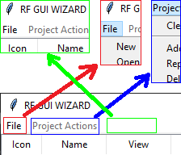
-
While building this test, you will run directly into an issue with timing. After clicking on a menu,
it takes a small amount of time to actually open/close menus. It's not a lot of time for a human, but RFW
can execute test steps so quickly that the menu may not be fully opened/closed before the next step. This is
known as a "race condition" where two actions are competing to be done first. There are two strategies to deal
with that delay.
Wait Until Keyword Succeeds 3x 2s keyword- We have already seen the Wait Until Keyword Succeeds and this is the preferred way to do things in RFW.
Sleep 2s- Like the story of the Tortoise and the Hare, one action will "sleep" while the other catches up. This method is not perferred because there is no guarantee that the second action has caught up or if it has failed entirely. The
Wait technique may FAIL but you will KNOW one way or another. With Sleep we are making some assumptions.
-
Create three keywords: click on the menu in question (fMenu, aMenu, nullMenu); get the view that should
be visible; verify the right anchor is present. The test will feature three useful keywords from GenericWindow.
winodwName.Click widgetName- Click does just what is sounds like: a single mouse click in the middle of that widget.
winodwName.Expected View- Get the name of the view (e.g.
View[main]) which the window is expecting based on the last item clicked.
windowName.Actual View- In this case, the window searches for any visible anchor and then identifies the actual view that is visible.
-
The test itself consists of one keyword called in sequence.
*** Test Cases ***
Menu Test
Suite Start
Open the window
Click and Verify fMenu
Click and Verify aMenu
#It is recommended to ALWAYS close as a test teardown action
[TEARDOWN] Close the window
*** Keywords ***
Click and Verify
[Arguments] ${menuName}
RF GUI Helper: Click ${menuName}
RF GUI Helper: Verify View
-
Take time to record OQE for your tests. In general we suggest the following pattern, but you can adapt your test as you see fit.
For greater detail you can review the documentation of those features in
RFTest/OQE/DataExtraction.resource.
- Before starting each major section of the test, use a banner to declare the name/purpose of the section.
- Declare each action just before you take it.
- Take pictures of any portion of the screen involving action or analysis.
- Report any data first; analyze and report the findings afterwards.
- As needed you can add a soft or hard break in the report to visually separate subsections of the test.
- Declare a pass/fail at the end of each major section of the test
-
If you build this test as shown you will get failures. This occurs because aMenu doesn't open when clicked.
That operation is actually correct (it is disabled until a project is opened). There are many ways to account for this
such as the TRY-EXCEPT-END seen above. In this case it would be better to use Run Keyword And Expect Error.
That technique is preferred because it will catch the error as a message and it will continue operation only if the error occurs.
This is an excellent way to make a test intentionally fail and yet anticipate and accept that failure.
This expected failure condition offers and opportunity to use default arguments. In the code below we have added ${expectFail}
and given it the default value False. In the test we call Click and Verify with just fMenu and so it is
not expected to fail. For aMenu we can add expectFail=True and handle that case differently.
Click and Verify
[Arguments] ${menuName} ${expectFail}=False
-
As a final step in your test-building efforts, always perform a final clean up. Consider any keywords which exist in the
.robot
and which may be reused in the .resource file. Bear in mind that there is no one right solution to this test. The solution
files below are a good example set, but not necessarily the only possible solution.
Solution Scripts
RFW script
Resource script
Project 7. Remote Testing
This last session will demonstrate the use of RFW from a
remote machine. Sikuli natively supports remote actions
over a VNC connection. RFW 3.1 takes advantage of this
capability and can direct all of its actions toward a GUI
on a remote machine. The student will be able to alter a
test to work on a remote machine and verify that the test
works as expected.
Instructions
-
In order to remotely operate a system, it must have a VNC
server installed and you must know the IP of that sever. The
base port for VNC is always 5900. In some systems you will
see that the various servers start at
:1 or :2.
These terms mean that the server is actually on port 5901 or
5902 respectively. Some server applications can be set with
a fixed port number. Find the ip information for your target system and
and set it as a test variable. You could link to another learner's computer
or use 127.0.0.1 which references your own computer for this exercise.
*** Variables ***
${REMOTE} = 192.168.0.199;5900
NOTE: We are aware that it is unusual and even dangerous
for a VNC sever to be set up without a password. However, we have seen problems
connecting through Sikuli with a password. We can recommend that for the test you start the
VNC server vncserver -SecurityTypes None to disable password requirements.
-
This
${REMOTE} variable will be used for only two processes.
The first is DataExtraction.Configure Image Library
which uses the remote connection data to configure the primary Sikuli
object to capture images, etc. The second is genericwindow.Configure
which will be used for each window in the test. Each window has its own
instance of the SikuliLibrar to read, write, click, etc. Each instance is run through the same SikulyEntry server.
And within a single window, all the widgets use the same SikuliLibrary instance, but
each windows can be configured with its own remote connection. In this way, RFW 3.1
can support multiple screens.
Configure Image Library Sikuli ${DATA PATH} ${remoteVNC}=${REMOTE}
...
RF GUI Helper: Open ${DATA PATH} remote=${REMOTE}
...
main.Configure Sikuli ${config path} ${d Path} ${remote}
The observant reader may have noticed that ${remote} is implemented as a default parameter.
As we saw before, this allows us to ignore remote connections unless one is specified. Add
a default parameter to RF GUI Helper: Open. It is already a default parameter under
GenericWindow.Configure. If the remote connection is not set, it is None (e.g. no remote connection).
Therefore, we only need to provide the connection when it is actually needed.
-
Otherwise, the test proceeds as normally. The connection is made under the
hood and all the details are hidden from the tester. Run your test on the
remote machine just as before.
Solution Scripts
RFW script
Resource script